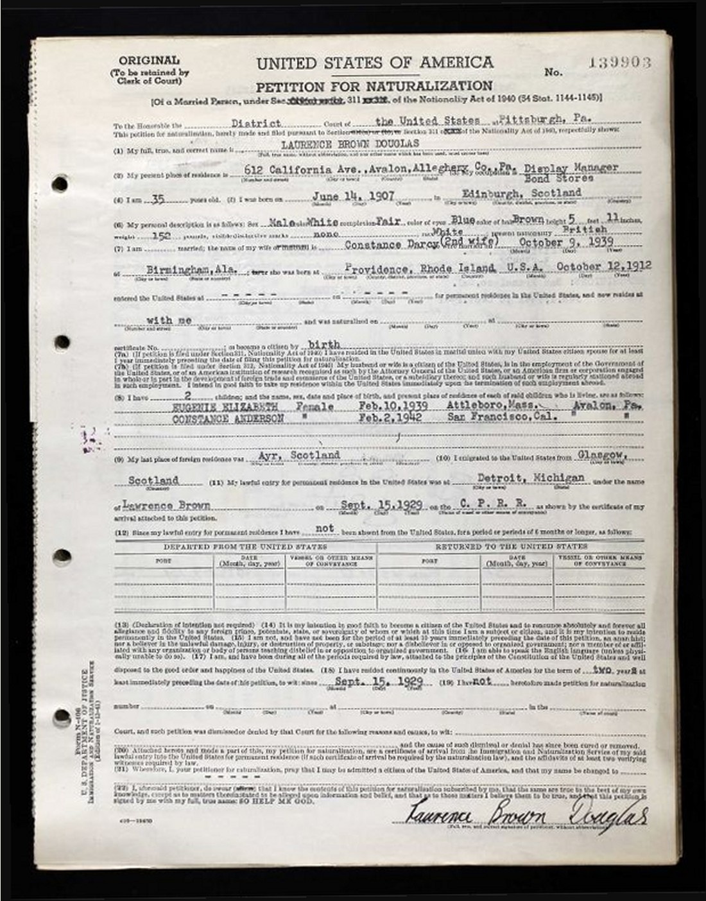

Item 49 · February 11, 1943
Petition for naturalization: Laurence Brown Douglas
The document

This copy carries yellow highlighting or red outlining added for the book site. It is not on the original.
Tap an image to open it full size.
Transcription, word for word
Everything as written, including misspellings. [?] marks an uncertain reading. Struck-through words are marked as struck through. Notes in square brackets describe the page and are not part of it.
ORIGINAL (To be retained by Clerk of Court) UNITED STATES OF AMERICA. No. 139903 PETITION FOR NATURALIZATION [Of a Married Person, under Sec. [figures struck through] 311 [figures struck through] of the Nationality Act of 1940 (54 Stat. 1144-1145)] To the Honorable the District Court of the United States at Pittsburgh, Pa. This petition for naturalization, hereby made and filed pursuant to Section [words struck through] Section 311 [struck through] of the Nationality Act of 1940, respectfully shows: (1) My full, true, and correct name is LAURENCE BROWN DOUGLAS (2) My present place of residence is 612 California Ave., Avalon, Allegheny Co., Pa. (3) My occupation is Display Manager Bond Stores (4) I am 35 years old. (5) I was born on June 14, 1907 in Edinburgh, Scotland (6) My personal description is as follows: Sex Male color White complexion Fair color of eyes Blue color of hair Brown height 5 feet 11 inches, weight 152 pounds, visible distinctive marks none race White present nationality British (7) I am married; the name of my wife [or husband — struck through] is Constance Darcy (2nd wife) we were married on October 9, 1939 at Birmingham, Ala.; [he — struck through] she was born at Providence, Rhode Island U.S.A. October 12, 1912 entered the United States at – – – – – on – – – – – for permanent residence in the United States, and now resides at with me and was naturalized on [blank] at [blank] certificate No. [blank], or became a citizen by birth (7a) (If petition is filed under Section 311, Nationality Act of 1940) I have resided in the United States in marital union with my United States citizen spouse for at least 1 year immediately preceding the date of filing this petition for naturalization. (7b) (If petition is filed under Section 312, Nationality Act of 1940) My husband or wife is a citizen of the United States, is in the employment of the Government of the United States, or of an American institution of research recognized as such by the Attorney General of the United States, or an American firm or corporation engaged in whole or in part in the development of foreign trade and commerce of the United States, or a subsidiary thereof; and such husband or wife is regularly stationed abroad in such employment. I intend in good faith to take up residence within the United States immediately upon the termination of such employment abroad. (8) I have 2 children; and the name, sex, date and place of birth, and present place of residence of each of said children who is living, are as follows: EUGENIE ELIZABETH Female Feb.10,1939 Attleboro,Mass. Avalon, Pa. CONSTANCE ANDERSON " Feb.2,1942 San Francisco,Cal. " " [Left margin beside the children: a purple stamp mark, illegible] (9) My last place of foreign residence was Ayr, Scotland (10) I emigrated to the United States from Glasgow, Scotland (11) My lawful entry for permanent residence in the United States was at Detroit, Michigan under the name of Lawrence Brown on Sept. 15,1929 on the C. P. R. R. as shown by the certificate of my arrival attached to this petition. (12) Since my lawful entry for permanent residence I have not been absent from the United States, for a period or periods of 6 months or longer, as follows: DEPARTED FROM THE UNITED STATES: Port | Date (Month, day, year) | Vessel or other means of conveyance — RETURNED TO THE UNITED STATES: Port | Date | Vessel or other means of conveyance [all blank] (13) (Declaration of intention not required) (14) It is my intention in good faith to become a citizen of the United States and to renounce absolutely and forever all allegiance and fidelity to any foreign prince, potentate, state, or sovereignty of whom or which at this time I am a subject or citizen, and it is my intention to reside permanently in the United States. (15) I am not, and have not been for the period of at least 10 years immediately preceding the date of this petition, an anarchist; nor a believer in the unlawful damage, injury, or destruction of property, or sabotage; nor a disbeliever in or opposed to organized government; nor a member of or affiliated with any organization or body of persons teaching disbelief in or opposition to organized government. (16) I am able to speak the English language (unless physically unable to do so). (17) I am, and have been during all of the periods required by law, attached to the principles of the Constitution of the United States and well disposed to the good order and happiness of the United States. (18) I have resided continuously in the United States of America for the term of two years at least immediately preceding the date of this petition, to wit: since Sept. 15, 1929 (19) I have not heretofore made petition for naturalization: number [blank] on [blank] at [blank] in the [blank] Court, and such petition was dismissed or denied by that Court for the following reasons and causes, to wit: [blank] and the cause of such dismissal or denial has since been cured or removed. (20) Attached hereto and made a part of this, my petition for naturalization, are a certificate of arrival from the Immigration and Naturalization Service of my said lawful entry into the United States for permanent residence (if such certificate of arrival be required by the naturalization law), and the affidavits of at least two verifying witnesses required by law. (21) Wherefore, I, your petitioner for naturalization, pray that I may be admitted a citizen of the United States of America, and that my name be changed to – – – – – (22) I, aforesaid petitioner, do swear [affirm — struck through] that I know the contents of this petition for naturalization subscribed by me, that the same are true to the best of my own knowledge, except as to matters therein stated to be alleged upon information and belief, and that as to those matters I believe them to be true, and that this petition is signed by me with my full, true name: SO HELP ME GOD. [Signed] Laurence Brown Douglas (Full, true, and correct signature of petitioner, without abbreviation) [Printed, left edge, sideways] Form N-406. U.S. DEPARTMENT OF JUSTICE. IMMIGRATION AND NATURALIZATION SERVICE. (Edition of 1-13-41) [Printed, bottom left] 439—19470[?]